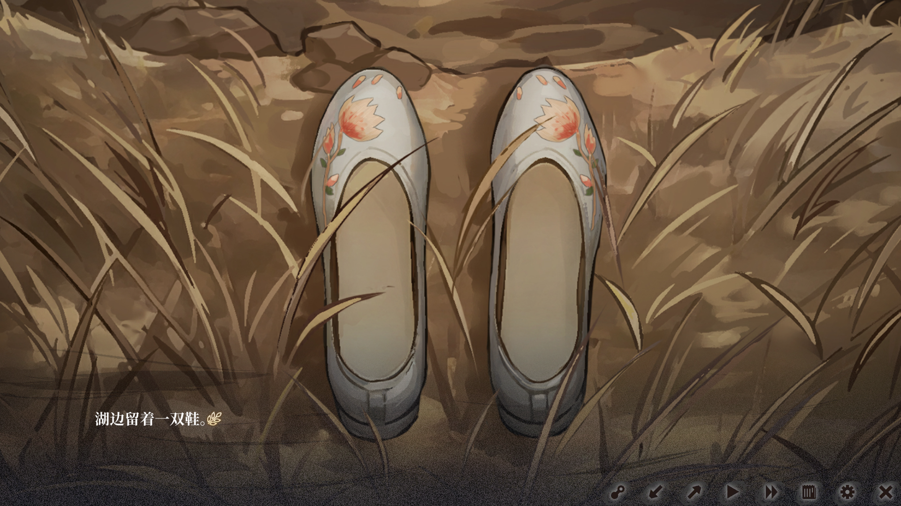
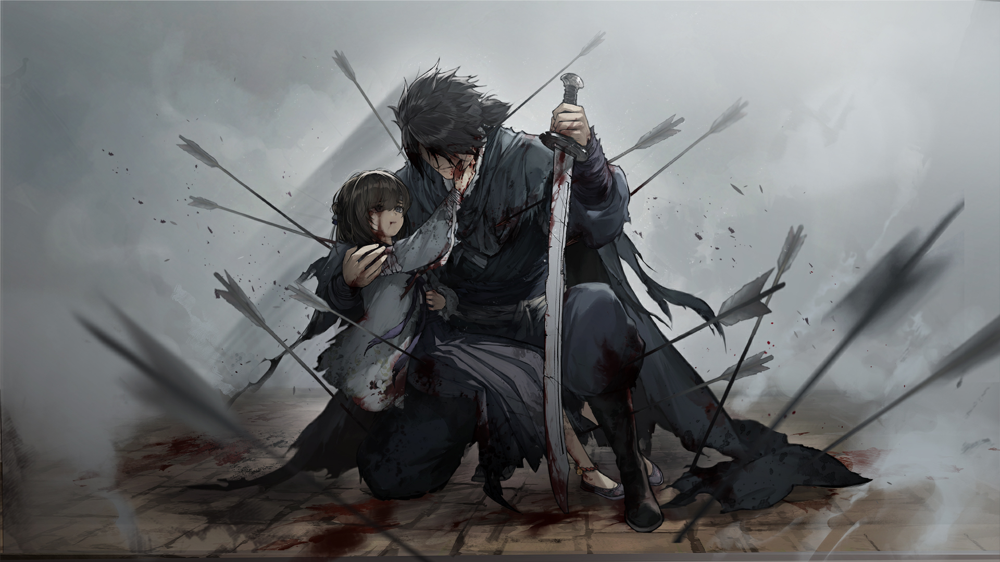
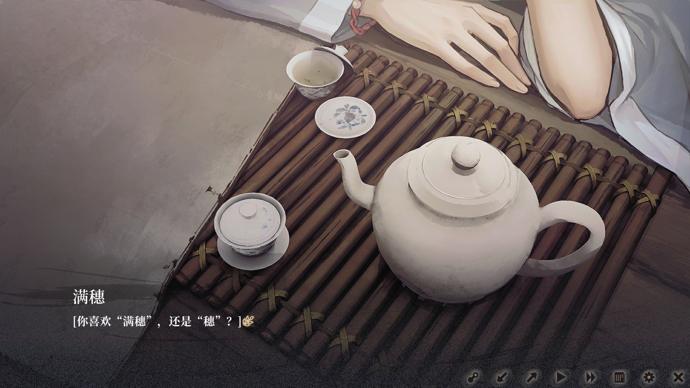

男主是个杀人抢劫的狼，专门去杀害落单的羊，然后抢走他们身上的东西以此活下去。 他是狼但不完全是狼，他还有身为自己做人的底线，在他的心中尚存有一丝侠气， 也正是因为这丝侠气，才有了最后的结局。女主的爸爸因为家里揭不开锅了出去外地用物换钱， 回家的路途中被男主杀掉。女主家的人就一直等着女主的爸爸，直到到最后快饿死了， 女主经过一些很残酷的事实后吃了“神仙肉”最终活了下来（也只有女主活了下来）， 但也正因如此，女主得到了活下去的理由，发誓报仇要杀了残害爹爹的坏人。 女主经过了很多地方做了各种各样的事，但目标从始至终都是为了寻找杀父仇人， 在一些人的帮助下，女主踏上了寻找仇人的道路，最终在一家当铺， 她找到了自己亲手给爹爹缝的香包，此刻，一丝丝爹爹与家人的回忆涌上心头， 女主再也忍耐不住，失声痛哭了起来，随后哭着央求掌柜告诉她是谁当的， 最后用身上所有的钱换取到了这个消息。这个香包正是身为狼的男主当的。 女主通过到处打探消息，知道了男主和另一个狼经常会在一个叫尹三的人手下做事， 于是边装作哑巴，自己走进了作为人呀子尹三开的客栈，为的就是想办法接近男主。 正巧，尹三收到了命令，要送四只小羊去洛阳，女主正好是其中一只，通过了解， 这四只小羊分别叫红儿，翠儿（她们是姐妹），琼华和女主，均不过10岁， 女主更是骗了尹三，告知自己是9岁，女主很瘦也长得矮，尹三便没起了疑心。 第一天，舌头立下了他所谓的规矩，并说出了吓小孩子的话”谁要是胆敢逃跑， 就拿鞭子抽死他，死了还要被我剥皮生吃“男主则是一言不发，回过头去， 三只小羊已经被吓得胆战心惊，但是只有女主，那个小哑巴，男主看不透。夜里， 女主谎称要去解手，男主便带着女主去湖边解手，男主看着女主解手， 女主的刀藏在裙摆里，一脱裤子就会被男主发现，见状，女主露出一副不好意思的模样， 男主本以为这么小的孩子是不懂男女之事的，但是此刻觉得女主是害羞了， 便毫无防备的转了身，女主见状掏出了刀，用尽全力向男主刺去，男主被这突然袭来的偷袭吓到了， 但多年做狼的经验，使得他敏锐的躲过了这一击，反手夺过刀，将女主按在地上， 脚压着女主的肚脐，另一只手掐在了女主的脖子上，愤怒的吼着女主：“你tm到底要干什么”。 女主被压得喘不过气来，不得不开口说话“疼！疼！......饶命啊，饶命啊！“， 男主震惊了一下，小哑巴，竟然说话了。男主震惊之余问了她许多问题， 女主最终告诉了男主关于豚妖的故事，还说了此行并不是送她们去找个好人家或者当丫鬟， 而是送她们去给洛阳的豚妖当”菜人“。女主又解释道，说自己的姐姐被豚妖所害， 此行便是要趁机找豚妖报错，因为白天害怕兴爷讲的话，脑子一乱就想出了要刺杀良爷。 男主对她的话半信半疑，问了女主家住哪，并吓着女主说要是女主骗他，就杀了女主全家。 女主也对天发誓：骗了你，我全家不得好死。最终男主因为女主还是小孩放轻了警惕， 并没有将今晚以及女主不是哑巴的事告知他的同伙。他们继续行走在去洛阳的路上。
男主一行在路上偶然发现了做影子戏的工具，晚上男主放哨时无聊便拿出装着影子戏的木箱子， 用驴皮架好的白幕，研究起了里面的人物，突然女主说话了，表示自己会一点影子戏 ， 这使得男主产生了兴趣，在离营地50步远的地方又生了堆火，准备好了后女主便一边演着人物， 一边唱唱着戏，男主看着银幕的上的白光，煞时，天启大爆炸的惨象在男主脑海里出现， 当时男主还在和父亲看影子戏，强烈的白光朝着男主和他的父亲袭来， 男主受到波及好似乎撞到了什么东西，晕了过去，醒来时发现周围全是被炸碎的尸体和漫天的血水， 害怕的男主想要寻找父亲时，突然察觉到手里握着什么，定睛一看，是父亲的手！！！ 男主突然惊叫了一声，缓了一下，直到确保了自己身处在漆黑的夜晚才沉下心来， 看了看不解的女主，男主不想多说什么，收拾好东西，两人回了营地。 后面这几天男主都没有研究影子戏了。途径一家客栈，男主一行休整了一天， 小羊们和男主相继泡了热水澡，但之前让男主为小羊的需求跑东跑西的，男主有些不爽， 便叫住了带头的女主，让她帮男主提水烧柴，女主忙到最后，被男主以她身上有汗臭味为由， 留她再洗一个澡，女主脱的很快，梭的一些，跳进水桶中，手撑着木桶，侧着头看着男主 说到：“良爷原来没在看我呀”“看了，只是觉得没什么好看的，就转过身去了，” “那良爷觉得我怎么样””除了瘦还是瘦，你这小娃子身子都被看光了，还在聊这些， 就不怕今天的事传出去嫁不去了人吗“”对哦，啊！有了，那我嫁给良爷吧！“ ”不要，哪怕在过个十年，身上长了些肉，坐落成了大美女，按你的性格我还是不会要“ ”唔，被良爷嫌弃了“女主似乎撒娇似的说到，后面聊了许多，哪天夜里意外的场景也做了解释。 一天过去了，男主一行人又踏上了去洛阳的道路，对那天的事，也忘记了不少。行走之前， 舌头竟为小羊们带来了糖果，小羊们你看我我看你都不敢拿，后面舌头不耐烦的数数， 要是时间到了就都别吃了，小羊们这才放心伸手拿糖果。这天夜里，男主和女主又去研究了影子戏， 事后，两人回营地时，女主疑惑的说兴爷最近很怪，对我们的态度好了很多，得留意一些。 男主也觉得舌头不对劲，认为女主说的有理，于是这几天男主除了在晚上和女主研究影子戏， 也一直关注着舌头的状态。果然，舌头这几天给的干粮变多了，不再扣扣嗖嗖， 小羊们提出解手后的态度也像是变了个人，之前心情好就骂小羊屎尿多， 心情不好就用狰狞的脸回应道不许上。如今，他都会乐乐呵呵的带着小羊们去解手。 男主觉得不对劲，舌头肯定瞒了什么。一个夜里男主找到舌头单独谈话，并不断逼问舌头， 起初舌头说是因为这一单可以多拿100银才这样的，我不信，继续逼问， 最终得知了原来送这些小羊不是送他们当丫鬟或者去找个好人家之类能好好活着的事， 而是正入女主所说，要送他们去当”菜人“——之前说过，男主不是纯粹的狼， 他还有自己的底线，他觉得送小羊去当”菜人“触碰到了他的底线。男主了解一切后并没有给出答复， 送还是不送。随后在客栈里，又是这件与同伙就发生了争执，舌头偷摸去叫人， 幸好女主聪慧过人，猜测舌头出去大概率是去叫人，理清了这一切就告诉了男主自己的推测 （男主在她眼里还不能死，因为其他的小羊还没安排好去处，经过这些天的相处女主认为 男主会安排好她们）随后乘舌头前先一步杀了他。男主和女主思考了处理舌头的办法， 以及之后的打算，男主和人呀子不熟，不放心将其他三只小羊交给他们， 自己身边也是一个亲人朋友都没有，男主在思考间，突然想到一个值得信赖的人 （自己之前救过她的命），可以交给她，之前听她说过要去解州发展。 但是男主疑惑为什么女主唯独没有想过自己的安排。女主还是说自己想去洛阳， 杀了那豚妖，男主虽然出言想劝阻女主，但女主执意要去，男主见状也只得作罢， 打算日后在想办法劝劝她，到时候去洛阳也正好顺南下的路。第二天， 男主向所有小羊重新规划道”咱们改路去解州“ ，小羊们不解，不是说去了洛阳， 才有吃不完的馒头吗。”良爷发现洛阳的那家人不是好人，所以才重新找了给好人家， 相信良爷吧“，女主在其他小羊们疑惑时说出了话。”嗯，我们相信良爷，相信穗儿姐“， 男主心涌去了一股暖意”出发吧！“于是男主一行人便出发去了解州。路上， 小羊们似乎发现了兴爷，对舌头把在这里表示困惑，”你们希望他在这里吗“ ”希望，兴爷虽然一开始对俺们很凶，但是最近待我们很好“”他有些事，大概是来不了了“。 一番波折，男主意外找到了他那个信的过的朋友，这家客栈的老板娘，鸢。与鸢了解后得知， 想要卖个好价钱就得把她们卖到黑钩栏或者当别人的童养媳，又或者......，卖给自己， 自己会好生对待她们。但是得到的钱两与前着相比差了足足十倍有余， 这点钱真的值得我跋山涉水这么久的辛苦吗。正当男主思考着是否让他们留在鸢这里时， 小羊们端来了做好的饭菜，这是她们自己做的，男主意外看了看桌上的三个菜， 又看了看其他小羊咧着笑的脸上，夹着筷子尝了一口，心里顿时五味杂陈， ”怎么样，好吃吗，良爷“”这个菜的白菜是我切的哦“”尝尝蛋汤吧，良爷“， 小羊们兴奋的看着男主说到，我又唱了一口野菜汤，腥味很重，我不喜欢， 但还是说了好吃二字。男主回味片刻，可能知道自己的选择了，男主吃完饭后便去找了鸢， 希望能让红儿和翠儿留下，至于琼华，需要你多多打探他父母的消息， 然后把她送回去，鸢同意了。男主一大早进了城，除了购买路上所需的干粮， 还给她们一人买了一个礼物，回到客栈后，男主叫醒了她们，并给她们送好了礼物， 虽然昨天便以及说好了将他们留在这里的事，但是现在到了临别之时， 小娃子们依旧控制不好情绪，最小的翠儿抱住了男主的腿放声痛哭，祈求男主不要走， 但是到了不得不走的时候翠儿还是松开了，在离开之前，女主和每个娃子讲了悄悄话 。——每个说的话很短，我也能大概猜得到，是说了一些临终的话。 （红儿的礼物是拨浪鼓，握住这个鼓来回转，便能敲打出声音，送给翠儿的是陶响球， 把它拿在耳边摇，或者放在地上滚便可以听到奇特的声音，送给琼华的是一个紫色的风车， 只要对着它吹气，便可以转动起来。）一阵风吹过，琼华的风车被带动了起来， 吹出打转的声音，再而，拨浪鼓和陶响球也响了起来，弹丸打在鼓面上的声音、 陶响球内沙沙的声音,一齐给风车伴奏。我似乎隐约间听到了女娃们的哭声。” 再见“——明明可能再也见不到了。去的路上，男主和女主坐上了鸢介绍的去洛阳的车。 车上女主询问其他女孩都有礼物，那我的呢。男主听了后这才想起还有她的礼物没用给， 女主看了看，是一双新鞋。”喜欢吗“，”喜欢“女主抬起眼眸看着我，微微一笑。 她笑得咧开了嘴，露出了牙，也显出了两个浅浅的梨涡。我看得微微愣了神。 先前没见过她展露出这样的表情。此时女主提出想要男主帮他换鞋的想法， 女主见男主疑惑便解释起来，”我记得很小的时候，爹爹也送了我一双鞋。 当时，便是他给我换的……“，男主想了想，这小崽子从小家破人亡，如果不是家人的话， 一般很少有人送她礼物，男主帮女主换了鞋。此后他们便沉默了很久，男主困意渐胧 ，睡下了。女主看到男主睡去后便有着拿刀杀了他的想法，杀父仇人就在里， 但是却做不到了，想了想之前他对其他女孩的安顿，又想到了刚才自己在生日当天收到了 从未有过的礼物（当时男主不知道女主的生日，也还以为他只有11岁，其实， 这天过后女主就14岁了），”不行“，心里想着，自己还是下不了手。 于是决定就着画上他的样子的画，自己去官府刺杀王爷时带上这副画，便可以借刀杀人。
到了洛阳，晚上有庙会，人都被吸引过去了，男主女主在湖边闲逛时，遇到了两个乞丐打劫， 他们一个斗鸡眼，一个说话不利索，打劫的样子像是第一次做，并不熟练。 武艺高强的男主三下五除二就打趴了他们，拿着刀想吓吓乞丐想打听消息， 随后走出来了乞丐的小孩，看样子五、六岁，是个小女孩。那个小女孩抓着我的脚， 拿着路边捡的树枝不停敲打着我，”不许打我叔叔，不许打我爸爸“。 我放过他们并抚了他们起身，了解得知是因为乞丐两个长得丑打工没人要最后没钱吃饭了， 小孩也快饿死了，没有办法了才趁着庙会出来打劫。男主听后和他们说了几句， 并半蹲着身子下来，给了小孩一些银两，让她去买些东西吃。到了客栈边上的巷子里， 我们沉默不语，男主看向女主，发现她的眼眶红彤彤的，是想起了什么吗？”我想了想， 还是不卖你了“，”不卖我了？“女主微微测过头来，不可置信的看着我。”嗯，不卖你了， 想了想，卖你也买不了多少钱，不如就跟着我，你跟着我，我们一路向南......“ 没等我说完，砰的一下洛阳城的烟花在漫天的黑布上绽开，很快，我想起了天启大爆炸的惨状， 但这次并没有持续多久，清醒的我将自己拉回来现实。“不行的”， 女主的声音传来。男主看着她，她抵着自己的头发，洛阳城的烟火仿佛成为了她的背景， 烟火也照亮了她的脸颊，女主含泪的望着我。此刻，这个瞬间便像画一样钻进了我的脑海中。 “不行？”男主从没想到这个小崽子会直截了当的说不行。“为什么不行”，“因为......” 又是几声炮响，让她原本要说的话消失在了空气之中 。白天等待的烟火竟在这个时候使得我 厌烦起来，“你说什么”男主提高了音量“......”“良爷，我去解个手“男主同意了她的想法， 女主也慢慢离去。经过洛阳这些事，以及之和男主的经历，女主似乎动了恻隐之心， 还是没有想好要不要杀了这个让她全家死了的仇人。男主等了很久，发现不对劲开始寻找女主， 找了很久都不见踪影，一直找到了宵禁，无奈只得先回客栈，这一晚，男主想了很多， 还是没想明白女主为何会不要他。第二天男主准备下楼，店小二拦住男主说， 你昨天带着的那个小女孩让我给个东西给你，男主打开一看，包裹的竟是之前被自己杀掉的羊 所携带着的香包，男主下这才恍然大悟，原来自己是女主的杀夫仇人，不等片刻， 男主慌忙跑去找女主，路上正好遇到了昨天的那个乞丐小孩，乞丐小孩引了路，男主突然想 起来女主与他说过关于洛阳的这条河，便立马沿着河边向前跑去。沿着河道前行，画面里面渐渐 出现了一个湖。（这就是之和女主和男主所说的地方）男主再一次加快了速度，终与在湖边一个开阔的 地方找到了线索，这里的脚印由进到远一直延伸到湖里，而在那尽头，则是发现了一双鞋。
终于在一个是湖的尽头的地方找到了女主，女主此时半个身子站着湖里，任凭男主如何呼喊都没有， 男主下去找他，女主突然抬起一把刀向着男主的心脏刺去但是这一击并没有刺进去， 反倒是像保持举着刀的动作，男主没有任何躲避，甚至像直挺着刀过去寻死，好了解与女主的恩怨。 她哭泣着咬着牙向男主说到，自己已经在梦里想过一万次杀男主的想法， 但是男主一次次的变化又人自己产生一次次的迟疑。女主因为对自己下不去手杀了面前的仇人而放声痛哭， 这是男主见她头一次这么哭的这么伤心。我似乎是像一心求死，即使一直向南走，也没有什么意义， 这乱世已经活够了。男主继续向着刀走去，”不行“，”杀了我“，”我做不到“，”杀了我“， ”都说了我做不到啊“女主哭着大喊了出来，男主女主一直这样对峙，男主确定女主现在还下不了手， 微风吹在湖面上，女主弱不禁风的身躯微微颤抖了起来，是因为情绪太激动？不，因为她冷！ ”竟然你现在不想杀我，那就晚点杀我，先上来吧，你现在，应该很冷吧“，我率先上来岸， 过了一会女主也上来了，男主注意到一个细节，女主是赤着脚走下去的， 而男主送给她的鞋还在湖边静静的摆着。——为什么不穿这鞋，是因为她很珍惜这双鞋吗？ 不，大概她只是不想带着仇人的礼物去见她的爹娘们。你今年到底多大“， ”14，你送我礼物的天，我刚满14“，男主有些震惊，这小娃子居然有14了，到了寻常女子嫁人的年纪， 可以算作成人了，她这副样子大概是在长身体的时候饿了太久导致的， 前几天刚满14岁——难怪当时会对我下不了手。毕竟，虽说我是她的杀父仇人， 却也是在她成年的那天--唯一送她礼物的人。”你家里人后面怎么样了“ ”奶奶稍早些就死了，弟弟是病死的，娘是上吊死的。“”不是我害死的吧“”就是你害死的“， ”爹爹本来取了粮食，带回给我们，我们一家就不会饿死了，就是你害死的“， 毕竟，我若不杀他爹，她爹爹便可以带着粮回去救她全家，她家或许能熬过灾年,一直活下去。 凡事都有因果，大概便是这样，她若是不去怪我，难道要怪那个三年不下雨的老天爷吗? 我确实该被她杀，让她完成复仇仇。毕竟——我是她最大的仇人，也是她唯一的仇人。 而当我把她家破人亡的罪责全归结于自己时，却不知怎的，觉得不太对劲。有一种违和感...... 是什么违和感?刚才回想一路走来，我突然想起一件事。男主回想着自己以往的遭遇，当初， 我爹死了，死于京城那次的大爆炸。爹死了后，我便和其他无家可归的灾民们聚在一起， 等着官府调查爆炸案，给我们一个说法。可十几天后，他们并没有给我们说法， 也没有给我们救助……他们说一切都是天灾怪不得任何人。他们叫了一伙官兵，说我们是乱民， 把我们直接轰走了……上面本该会给一些钱粮抚恤灾民的、他们说好要给的……最后却不作数。 我后来才听说，当时本应救助我们的钱粮，都被贪了!莫名其妙被用来给一个死太监修了生祠…… 他们以为瞒得很好!以为我们都不知道·……可这是关乎我们命的事，我们怎么可能不知道? 那之后，我便没地方去了，我一路逃，结果却是越活越难，，越活越不知道怎么活。 迫于生计，我只能成为盗匪，杀了你爹爹，也杀了很多人……是，我知道……我犯下这么多事， 是因为我这人坏，是我人性本恶!我也许本就是恶人.....但是我们都是迫于生计， 我没粮食吃了，才杀了你的爹爹，你们家也是没粮食吃了才让你的爹爹出来。那些自称受命于天、 享受我们几百辈子都享受不到的生活、却还要逼我们死的人，他们做得太过了!其实， 他们才是我们更大的仇人——如此的天!才是我们更大的仇人!!!
女主似乎也想起了，自己家每年按时按量交税，但官员却因为隔壁家跑了，要从我们家征收， 导致没了粮，没了量才让爹爹出去卖.....“我后来也打听过，家里的耕地虽在陕地， 我却是和豚妖关系不浅的一个狗官管的，偷偷帮他多收些粮。他单单在中原地界征粮还不够， 甚至临近的三地也有人替他横征暴敛。这么说的话，普天之下，很多人的家破人亡， 到底也是他害的……他确实是我最应该复仇的人。““良爷，我可以与你一言为定，若你真能杀了那豚妖， 我们的仇怨便就此两清”于是他们计划多套方案去刺杀王爷，最后通过了表演影子戏成功接近了王爷， 虽然最后王爷支开了男主。但好在男主果断，听到殿内有女主的动静，快速夺刀杀了几个侍卫， 最后与女主成功取下王爷的头颅，两个最后也一起死在了王爷府弓箭手的箭下，在临行之时， 他们说了想说的话，剧终，结局，共死。
”小崽子，你记不记得我们当初在解州时遇到的那支反军?“ ”记得，我们还给他们演过戏。“ ”嗯……我记得那支反军的旗帜上写着一个“闯”字，大概是叫“闯军”吧。我看那闯军的军纪还算不错， 他们进了李家村后对村民秋毫无犯，领头的很正派，为人仗义，很守信用。我想去山西一趟，专门找那个叫李闯将的人，投靠闯军。“ ”他们当时说话算话，演完影子戏后便放了我们，确实不像是土匪的做派。…..“ 她低下头，抿着下唇沉思了一会儿。许久后，她仿佛下定了什么决心，!重新开口说话。 ”也罢……良爷说的确实有道理，我的仇人不该只有你。满穗咬牙切齿地说着，捏紧了双拳。 ”行，良爷，我认可你的想法。你若是投了那“闯军”有一天能跟着他们打到洛阳，杀了豚妖，我可暂时留你性命。 毕竟，用你这第二仇人的命，去换那第一仇人的命，这买卖也算不得亏!“ 她轻轻抬起眼眸，看着我说道。”不过，你不要忘了我给你的命，只是暂借于你的! 等到洛阳城破、豚妖身死的那一天，我一定会来找你的。“ ”良爷!为了防止我之后想轻生，也为了防止你毁约，不如我们来立一个约吧?“ 她用轻快的语气提议着， ”立什么约?“ 我皱了皱眉，疑惑地问她。 ”拉钩、上吊、一百年、不许变…… 正当我思考着童谣的时候，她已经勾上了我的手指，同时念了起来。 哦!想起来了，就是这一句。 喂!良爷……你也念啊，两个人都念了才算数! 她一边念着，一边催促着我。 好…… 拉钩……上吊……一百年……不许变…… 我小声地、拖长腔地、不太情愿地跟她念完了孩童的童谣。 我们拉了钩，立了誓。 ”以五年为期，若是五年后，闯军攻入洛阳，良爷杀了豚妖，我们就在这里见面。“ “九年后，当时在洛阳湖边的决定是跟随反军（李闯将），男主和反军终是杀进了洛阳，并取了王爷的性命， 之前和女主的约定是五年后（或者10年，15年）来一次，如今王爷被杀，男主已经报了他们共同的仇人， 如今，心事了却，男主退出去了“闯军”去寻找女主。但是，在洛阳河边，男主找了整整5天，五天后边觉得心灰意冷了， 想着她离开后，干旱，蝗灾等灾害越来越严重，世道愈发不太平，也许女主早就死了，男主像泄了气的气球一样， 就这么想着，一直沿着那条河往前走，突然他倒在地上看着天空，似乎在想些什么，但这个时候，天上竟罕见的下起了雨， 男主发出感叹轻叹道：“是雨啊”，远处划来一搜船，船上的渔夫讲到：“老爷，别倒在地上了，会着凉的”，“与你何干”， 男主不耐烦的讲到。“不是我，是船上的姑娘怕你着凉了”，那渔夫又说到。“姑娘”！我振振起身看着渔船，一位拿着油纸伞， 身穿蓝色服饰的清秀姑娘缓缓知道了穿板上。“良爷，下着雨呢，别着凉了。”“你小子果然还活着”，男主如释重负的说到。 女主拉了一把男主，他们上了渔船。“现在豚妖已死，我这条命也可以还给你了”，男主深情地楠楠道。 “嗯…，在你了却完心事后，我再来杀了良爷吧”，女主微笑到。“心事，要说如今还有什么心事，确也有一个， 那就是想去解州去看看红儿翠儿”，男主闭着眼道。“她们的情况我了解过，琼华找到了她的父母，生活在了（现在新疆）， 而红儿和翠儿则在扬州的酒馆里，听说还表演上了影子戏。”“那接下来我们就去扬州吧”“你今年应该有23了吧” “嗯，二十有三”，没等男主继续讲女主又说到：“良爷可有娶妻” “并没有，兵荒马乱的，我还是在反军里整天打仗，哪有心思娶妻……那你呢”“我也未曾嫁人”， 女主看着男主紧接又说到“良爷是喜欢满穗，还是穗（满穗是女主的全名，和男主以外的人说到都是叫做穗）” “满穗”，男主说到。“哦！”（女主）“满穗，满穗，满穗……”
